Introducción
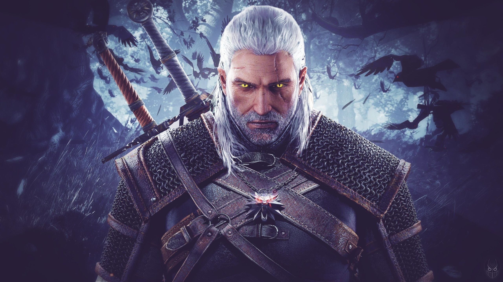
La saga The Witcher sigue la historia de Geralt de Rivia, un cazador de monstruos modificado genéticamente que recorre un mundo oscuro lleno de guerras, criaturas y decisiones morales complejas.
A diferencia de otras sagas, The Witcher no presenta una lucha simple entre el bien y el mal, sino un universo donde cada decisión tiene consecuencias y donde los monstruos no siempre son los verdaderos villanos.
Juegos de la saga
The Witcher (2007)
El inicio de la historia de Geralt, donde recupera su memoria y enfrenta amenazas tanto humanas como sobrenaturales.
The Witcher 2: Assassins of Kings
Una historia política compleja donde Geralt se ve envuelto en conspiraciones y guerras entre reinos.
The Witcher 3: Wild Hunt
La conclusión épica de la saga, donde Geralt busca a Ciri mientras enfrenta la amenaza de la Cacería Salvaje.
Cronología
The Witcher sigue una línea relativamente lineal dentro de los videojuegos, comenzando con el primer juego, seguido por The Witcher 2 y finalizando con The Witcher 3. Y Proximante llegara The Witcher 4
The Witcher 1 – Historia Completa
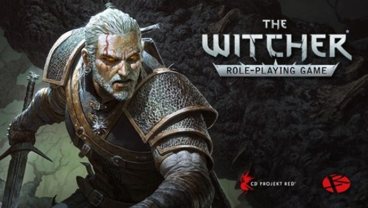
La historia de The Witcher 1 comienza con Geralt de Rivia en un estado muy particular: ha perdido la memoria. Después de los eventos anteriores de su vida como brujo, Geralt reaparece en las cercanías de Kaer Morhen sin recordar gran parte de su pasado. Ese detalle es clave, porque el juego no solo presenta una nueva aventura, sino que también reconstruye quién es Geralt mientras el jugador lo acompaña en su recuperación.
Kaer Morhen, la fortaleza de los brujos, funciona como punto de partida emocional y narrativo. Allí se presentan figuras fundamentales de la saga como Vesemir, Lambert, Eskel y Triss Merigold. El refugio, que debería representar seguridad, pronto se convierte en el escenario de un ataque que rompe toda calma. La organización criminal Salamandra, liderada por Azar Javed y apoyada por el siniestro Profesor, asalta la fortaleza con el objetivo de robar los secretos, mutágenos y conocimientos de los brujos.
El ataque a Kaer Morhen
El ataque inicial marca uno de los momentos más importantes del juego. Salamandra no solo roba información valiosa, sino que también deja claro que existe un interés enorme por el poder de los brujos. Geralt, aunque amnésico, actúa con la experiencia de un cazador entrenado y termina persiguiendo a los responsables. Esta primera crisis establece el tono de toda la historia: una mezcla de pérdida, persecución y descubrimiento.
Tras el ataque, Geralt debe abandonar Kaer Morhen y seguir el rastro de Salamandra hacia Vizima, una ciudad llena de tensiones políticas, criminalidad y conflicto social. A medida que avanza, el mundo del juego deja claro que las amenazas no son solo monstruos o bandidos; también son los humanos, sus facciones y sus obsesiones con el poder.
Vizima y la investigación de Salamandra
Vizima es el gran centro de la historia de The Witcher 1. La ciudad y sus alrededores están llenos de problemas: crimen organizado, odio entre razas, pobreza, corrupción y una tensión constante entre la autoridad y los grupos marginalizados. Geralt, que llega como cazador de monstruos, termina metido en una red mucho más compleja de conspiraciones.
En esta etapa el jugador empieza a ver que Salamandra no es simplemente una banda de criminales. Detrás de sus operaciones hay una estructura más seria, con intereses políticos y científicos. Geralt investiga asesinatos, rastrea pistas, interroga personas y se mueve entre barrios, pantanos y zonas periféricas para entender quién está financiando realmente a la organización.
La relación de Geralt con Triss Merigold también gana importancia aquí. Triss no es solo una aliada; es una de las personas que más lo ayuda a orientarse en un mundo que él ya no recuerda del todo. Su vínculo aporta una dimensión emocional que equilibra la dureza de la trama principal.
Las facciones: Orden de la Rosa Ardiente y Scoia'tael
Uno de los puntos más interesantes de The Witcher 1 es que la historia no se limita a una sola ruta moral sencilla. Geralt se encuentra atrapado entre dos fuerzas principales: la Orden de la Rosa Ardiente y los Scoia'tael. La Orden promete disciplina y protección, pero está llena de fanatismo y control; los Scoia'tael, por su parte, luchan por la libertad de los no humanos, pero muchas veces recurren a métodos brutales.
Dependiendo de las decisiones del jugador, Geralt puede colaborar más con una u otra facción. Eso no cambia el hecho de que ambas tienen razones legítimas y también defectos profundos. El juego usa esta tensión para mostrar que en el mundo de The Witcher casi nunca hay un bando completamente bueno. Todo tiene un costo.
Esta parte de la historia es muy importante porque convierte a Geralt en un observador obligado de un conflicto social enorme. Él no pertenece del todo a ninguna facción, pero sus decisiones terminan influyendo en el equilibrio de la ciudad y en la vida de muchas personas.
Shani, Triss y el lado humano de Geralt
Mientras la historia política avanza, también aparecen las relaciones personales de Geralt, que le dan profundidad al personaje. Triss Merigold representa una conexión fuerte con su presente y con su identidad como brujo. Shani, por otro lado, ofrece una mirada más terrenal y humana, ligada al deber, la medicina y la compasión.
Estas relaciones no son solo romances o vínculos secundarios. Sirven para mostrar que Geralt, a pesar de su entrenamiento y su frialdad aparente, sigue siendo alguien capaz de sentir, elegir y preocuparse. Esa humanidad es fundamental para entender por qué la saga funciona tan bien: Geralt no es un héroe perfecto, sino un hombre atrapado entre su deber y sus emociones.
Alvin y el misterio del niño fuente
Uno de los elementos más importantes de la historia es Alvin, un niño con poder especial, conocido como fuente. Alvin tiene una sensibilidad mágica muy peligrosa, y muchas de las personas que lo rodean entienden que su capacidad podría convertirse tanto en un don como en una catástrofe. Geralt intenta protegerlo, pero el destino del niño queda cada vez más ligado a las visiones, las amenazas y la manipulación de quienes quieren usarlo.
La relación entre Geralt y Alvin agrega una capa emocional y casi paternal a la historia. Geralt ya no está solo persiguiendo criminales; también está intentando evitar que un niño caiga en manos de personas que lo ven como una herramienta. Esto refuerza uno de los temas centrales de The Witcher: el poder siempre atrae abuso, y los más vulnerables son los que más sufren sus consecuencias.
La verdad detrás de Salamandra
A medida que Geralt avanza, descubre que Salamandra está mucho más conectada de lo que parecía al principio. Azar Javed, un mago poderoso, y el Profesor, una mente criminal fría y organizada, son piezas esenciales de la trama. Ellos no solo quieren destruir a los brujos; también quieren aprovechar su conocimiento, sus mutágenos y su ventaja biológica.
El juego va revelando que detrás de cada ataque hay un interés más grande, y que la violencia no es casual. Geralt comienza a entender que hay una conspiración que involucra poder mágico, políticos, facciones armadas y figuras ocultas dentro de Vizima. Esa acumulación de capas hace que la historia se sienta cada vez más densa y peligrosa.
Jacques de Aldersberg y el final de la historia
El cierre de The Witcher 1 gira en torno a Jacques de Aldersberg, un personaje que se presenta como una figura de autoridad y visión futura, pero que termina revelando una verdad mucho más compleja. Su papel en la historia está ligado a las profecías, al destino y a una idea extrema de control sobre lo que está por venir.
Geralt finalmente descubre que la amenaza principal no era solo Salamandra como grupo, sino la red de poder que se escondía detrás de ella. El enfrentamiento final obliga al jugador a ver cómo todas las piezas encajan: política, magia, fanatismo, ambición y manipulación.
El final del juego deja varias consecuencias importantes. Geralt no recupera su pasado de forma mágica ni cierra todo con una respuesta perfecta. En cambio, termina un capítulo marcado por la incertidumbre, el conflicto moral y la sensación de que el mundo sigue siendo igual de peligroso que al principio.
Conclusión de The Witcher 1
The Witcher 1 es una historia de reconstrucción. Geralt empieza sin memoria, perseguido por enemigos que no entienden del todo su poder, y termina descubriendo que el verdadero peligro está en las personas que buscan controlar a otros. El juego establece las bases del universo con una mezcla de fantasía oscura, política, monstruos y decisiones difíciles.
También deja claro algo muy importante: Geralt no es un salvador absoluto ni un símbolo puro del bien. Es un brujo que intenta hacer su trabajo en un mundo roto, donde casi todo tiene consecuencias. Esa ambigüedad es lo que hace que la saga funcione tan bien y lo que prepara el camino para los juegos siguientes.
Con el primer juego ya queda plantado el tono de toda la saga: monstruos reales, pero también monstruos humanos, y un protagonista que camina siempre en la línea gris entre ambos.
The Witcher 2: Assassins of Kings – Historia Completa
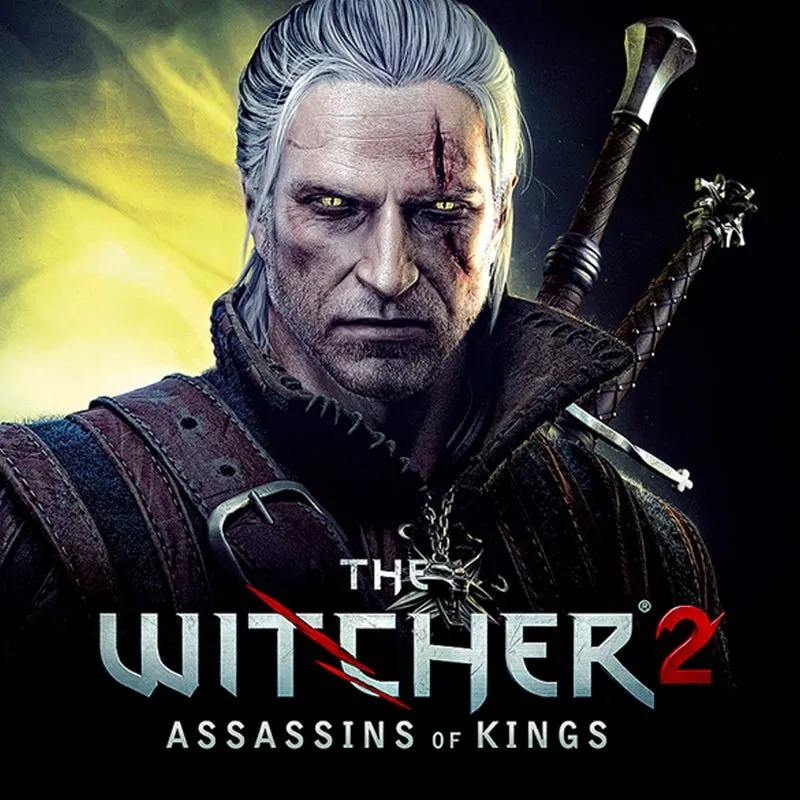
The Witcher 2: Assassins of Kings continúa la historia de Geralt de Rivia después de los eventos del primer juego. Aunque Geralt ha recuperado parte de sus recuerdos, todavía existen vacíos importantes en su memoria y muchas preguntas sin responder sobre su pasado. Sin embargo, esta vez la amenaza no gira únicamente alrededor de monstruos o criminales: el juego se centra principalmente en conspiraciones políticas, asesinatos de reyes y guerras entre reinos.
Desde el inicio queda claro que el mundo está entrando en una etapa de caos. Las tensiones entre humanos, elfos, reinos y grupos rebeldes son cada vez mayores. Geralt, que normalmente intenta mantenerse neutral, termina atrapado en el centro de una conspiración que podría cambiar el destino de todo el Norte.
A diferencia del primer juego, donde la historia era más personal y centrada en Salamandra, The Witcher 2 expande enormemente el universo político de la saga. Aquí Geralt deja de ser simplemente un cazador de monstruos y pasa a convertirse en una figura involucrada en conflictos entre reyes, ejércitos y conspiradores.
El asedio al castillo de La Valette
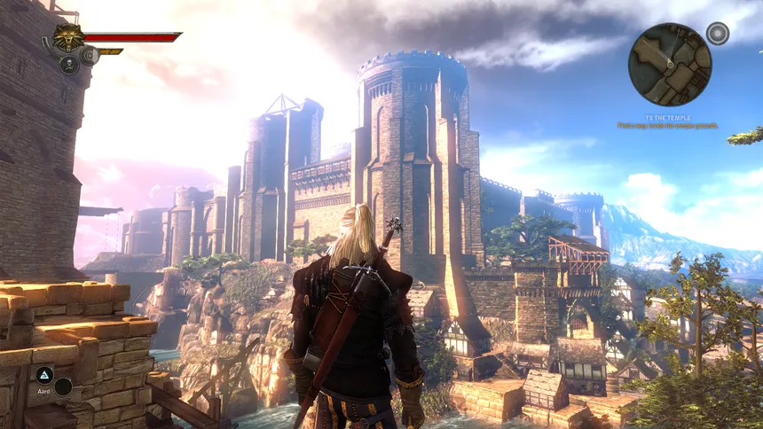
La historia comienza con Geralt acompañando al rey Foltest durante el asedio al castillo de la familia La Valette. Foltest busca recuperar el control político del territorio y demostrar su autoridad, mientras Geralt actúa como protector y aliado temporal del monarca.
Durante el asedio se muestran varios aspectos fundamentales del tono del juego: brutalidad militar, decisiones políticas y caos humano. El conflicto no se presenta como una lucha heroica tradicional, sino como una guerra llena de manipulación, miedo y violencia.
Geralt ayuda a Foltest a avanzar dentro del castillo mientras soldados mueren constantemente alrededor suyo. En medio del ataque también aparecen secretos relacionados con la nobleza, traiciones internas y problemas familiares dentro de la casa La Valette.
El juego deja claro desde el principio que el mundo de The Witcher está gobernado por intereses políticos más que por ideales heroicos.
El asesinato de Foltest
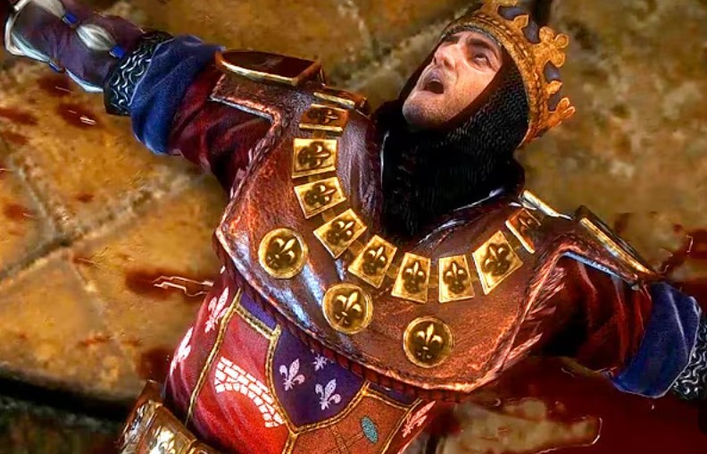
El evento más importante del inicio ocurre cuando el rey Foltest es asesinado por un misterioso brujo conocido como el Asesino de Reyes. Geralt presencia el ataque demasiado tarde y termina siendo acusado injustamente del crimen.
Esta situación cambia completamente la dirección de la historia. Geralt pasa de ser aliado del rey a convertirse en fugitivo perseguido por el reino. El asesinato no solo provoca caos político, sino que también genera una enorme desconfianza entre las distintas naciones del Norte.
La figura del Asesino de Reyes se convierte entonces en el centro de toda la narrativa. Geralt comprende rápidamente que debe encontrar al verdadero responsable si quiere limpiar su nombre y descubrir quién está manipulando los conflictos políticos del continente.
Este momento es importante porque transforma el juego en una mezcla entre investigación, supervivencia y guerra política.
Roche y la huida de Geralt
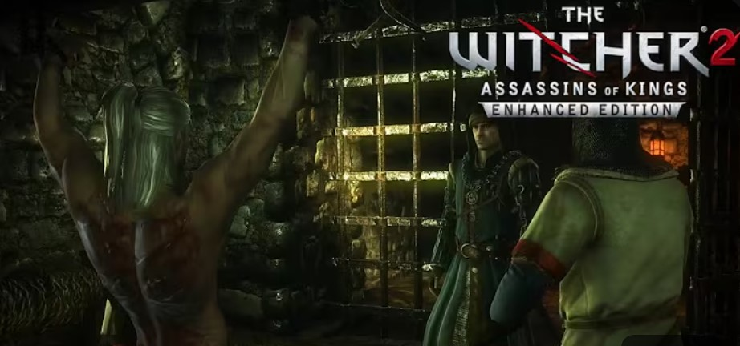
Geralt logra escapar gracias a Vernon Roche, comandante de las fuerzas especiales de Temeria. Roche es uno de los personajes más importantes de todo el juego y representa una visión extremadamente dura y pragmática del mundo.
A diferencia de otros aliados, Roche no actúa por bondad. Él ayuda a Geralt porque cree que el brujo puede ser útil para descubrir la verdad detrás de los asesinatos y porque entiende que el reino se encuentra en peligro.
Durante la huida, el jugador empieza a notar cómo el mundo se está desmoronando políticamente. Los reinos desconfían entre sí, las razas no humanas son perseguidas y los grupos rebeldes aprovechan el caos para iniciar revoluciones.
La relación entre Geralt y Roche es importante porque representa dos formas distintas de ver el conflicto: Geralt intenta mantenerse moralmente equilibrado, mientras Roche cree que la violencia y la fuerza son necesarias para mantener el orden.
Iorveth y el conflicto racial
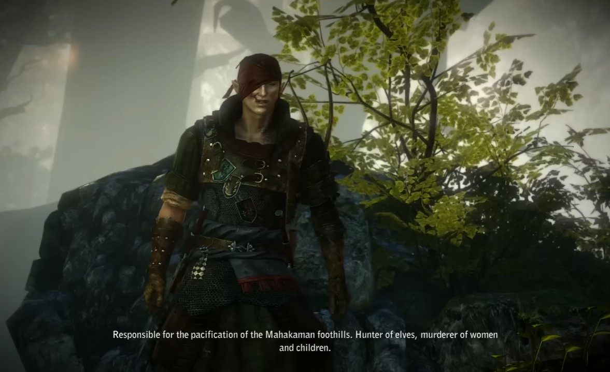
Uno de los elementos más importantes de The Witcher 2 es la posibilidad de elegir caminos distintos en la historia. Geralt puede colaborar con Roche o con Iorveth, líder de los Scoia'tael.
Iorveth es un elfo guerrillero que lucha contra la opresión humana. Para él, los no humanos llevan años siendo tratados como ciudadanos inferiores, perseguidos y asesinados. Sus métodos son violentos, pero nacen de décadas de odio y discriminación.
La presencia de Iorveth hace que el juego profundice muchísimo en los conflictos raciales del universo The Witcher. Los humanos dominan la mayoría de los reinos y consideran a elfos, enanos y otras razas como amenazas o herramientas.
Dependiendo de las decisiones del jugador, Geralt puede experimentar la historia desde perspectivas completamente diferentes. Esta estructura es una de las razones por las que The Witcher 2 es considerado uno de los RPG más complejos de su época.
Letho de Gulet – El Asesino de Reyes
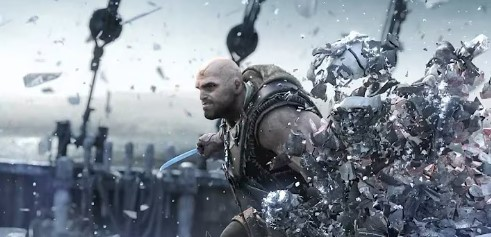
Eventualmente Geralt descubre que el Asesino de Reyes es Letho de Gulet, un brujo perteneciente a la Escuela de la Víbora. Letho no es un villano tradicional; es uno de los personajes más complejos de toda la saga.
A diferencia de Geralt, Letho trabaja directamente para intereses políticos mayores. Sus asesinatos tienen como objetivo desestabilizar el Norte y preparar el terreno para futuras invasiones y cambios de poder.
Sin embargo, el juego evita convertirlo en un simple monstruo. Letho tiene motivaciones claras, códigos propios y una visión diferente sobre la supervivencia de los brujos en un mundo que cada vez los necesita menos.
La relación entre Geralt y Letho es especialmente importante porque ambos son brujos que tomaron caminos distintos. Mientras Geralt intenta conservar cierta humanidad, Letho acepta trabajar como herramienta política para garantizar la supervivencia de su escuela.
La guerra entre reinos
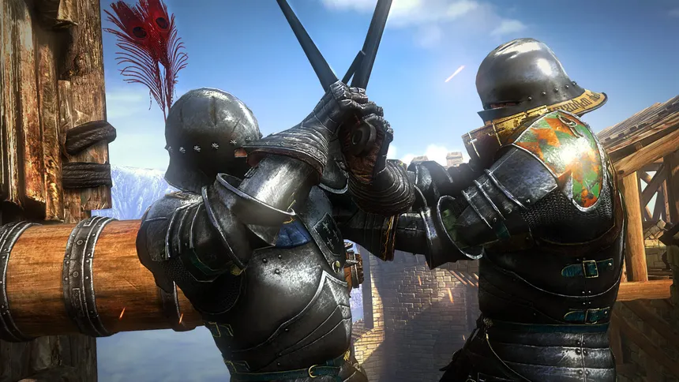
A medida que avanza la historia, el asesinato de los reyes comienza a tener consecuencias devastadoras. Los reinos pierden estabilidad, aparecen conflictos militares y el Imperio de Nilfgaard empieza a convertirse en una amenaza cada vez más cercana.
El Norte entra lentamente en un estado de caos político donde cada facción intenta aprovechar la debilidad de las demás. Geralt se encuentra atrapado en medio de conspiraciones donde casi nadie es completamente confiable.
Esta parte del juego expande enormemente el universo de The Witcher y prepara muchos de los conflictos que luego serán fundamentales en The Witcher 3.
La verdad sobre Yennefer y la memoria de Geralt
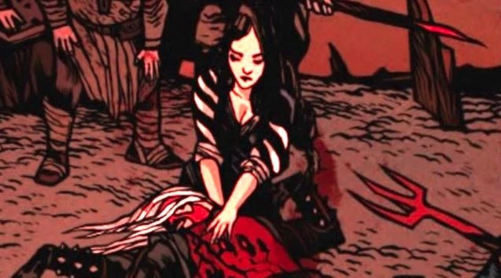
Uno de los aspectos más importantes del juego es que Geralt empieza a recuperar recuerdos relacionados con Yennefer y su pasado antes de los eventos del primer juego.
Esto cambia completamente la perspectiva del protagonista. Ya no se trata solamente de sobrevivir o limpiar su nombre; también se trata de recuperar quién era realmente y qué personas marcaron su vida.
Las memorias fragmentadas de Geralt sirven como puente entre la trilogía de videojuegos y las novelas originales de Andrzej Sapkowski. El jugador comienza a entender que existe una historia mucho más grande detrás del brujo.
El final de The Witcher 2

El final del juego depende de múltiples decisiones tomadas durante la historia, pero en general deja al continente al borde de una guerra total. Los asesinatos políticos, las conspiraciones y la intervención de Nilfgaard crean un escenario extremadamente inestable.
Geralt finalmente enfrenta a Letho y descubre toda la verdad detrás de los asesinatos. Dependiendo de las elecciones del jugador, el destino de Letho puede cambiar drásticamente.
El cierre también deja claro que algo mucho más grande se aproxima. Nilfgaard prepara su expansión, los reinos del Norte están debilitados y Geralt finalmente entiende que el mundo está entrando en una nueva etapa de conflicto.
Todo esto prepara directamente los eventos de The Witcher 3: Wild Hunt.
Los múltiples finales de The Witcher 2
Uno de los aspectos más importantes de The Witcher 2: Assassins of Kings es la enorme cantidad de decisiones que modifican la historia. El juego no tiene un único final completamente fijo, sino múltiples variaciones dependiendo de las alianzas, elecciones políticas y personajes que sobreviven durante la aventura.
Las decisiones del jugador afectan reinos enteros, relaciones personales y el equilibrio político del Norte. Algunas consecuencias son inmediatas, mientras que otras preparan directamente los eventos de The Witcher 3.
La estructura narrativa del juego es considerada una de las más complejas dentro de los RPG modernos porque incluso capítulos enteros cambian dependiendo de las elecciones del jugador.
Ruta de Roche
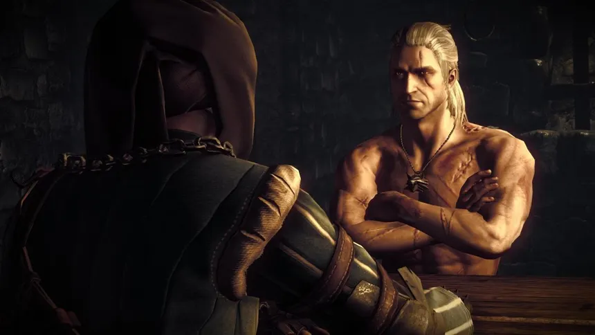
Si Geralt decide apoyar a Vernon Roche, la historia se enfoca mucho más en la estabilidad política de Temeria y en la lucha contra los grupos rebeldes. Roche representa una visión militar estricta, donde el orden del reino está por encima de muchas otras cuestiones.
Durante esta ruta, Geralt participa más directamente en conspiraciones políticas relacionadas con nobles, ejércitos y gobernantes humanos. La narrativa tiene un tono más militar y estratégico.
El final de esta línea argumental suele centrarse en la supervivencia de Temeria y en las consecuencias políticas de los asesinatos de reyes. Dependiendo de las decisiones del jugador, algunos personajes importantes pueden morir o sobrevivir, alterando el futuro del Norte.
Esta ruta también presenta una visión mucho más cercana de Roche como personaje, mostrando su lealtad extrema, su brutalidad y el conflicto interno que tiene respecto al deber y la moralidad.
Ruta de Iorveth
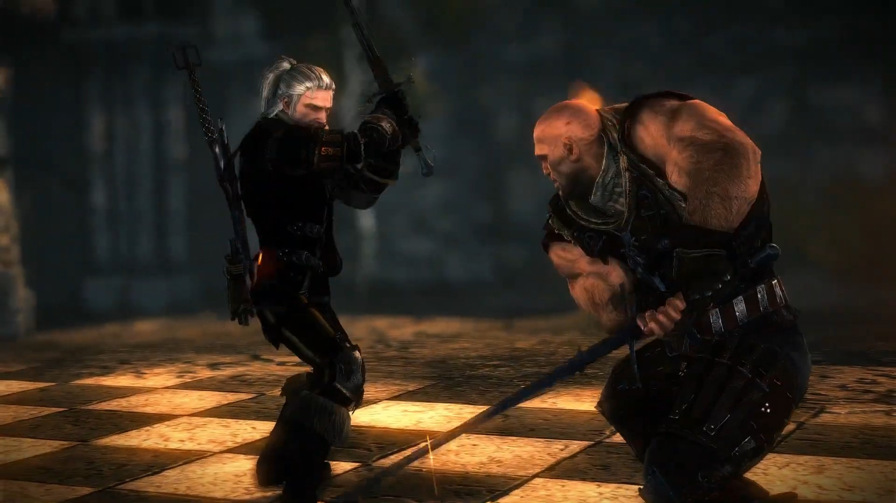
Si Geralt elige colaborar con Iorveth y los Scoia'tael, la historia cambia drásticamente. Esta ruta se enfoca mucho más en la discriminación racial, la situación de los elfos y la lucha de los no humanos por sobrevivir.
El jugador presencia directamente cómo los reinos humanos han perseguido y marginado durante años a otras razas. Esto hace que la narrativa tenga un tono más social y revolucionario.
La ruta de Iorveth también introduce conflictos políticos diferentes y permite explorar personajes y eventos que no aparecen en el camino de Roche. Muchas ciudades, misiones y perspectivas cambian completamente.
Dependiendo de las elecciones tomadas, Geralt puede ayudar a cambiar el destino de comunidades enteras o contribuir indirectamente al aumento de la violencia racial dentro del continente.
El destino de Letho
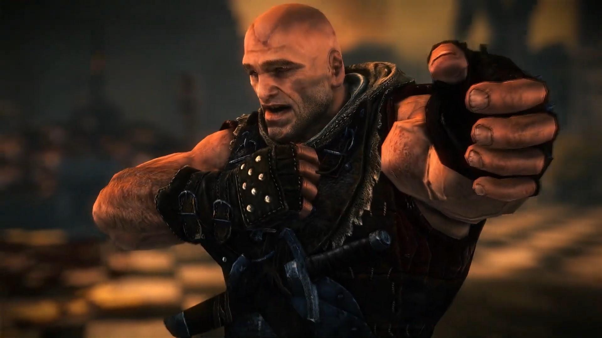
Uno de los momentos más importantes del final ocurre durante el enfrentamiento entre Geralt y Letho de Gulet. Después de descubrir toda la verdad detrás de los asesinatos, Geralt finalmente tiene la oportunidad de decidir qué hacer con el Asesino de Reyes.
El jugador puede matar a Letho o perdonarlo. Esta decisión es extremadamente importante porque cambia el destino del personaje y también afecta eventos futuros en The Witcher 3.
Si Geralt decide matarlo, el conflicto entre ambos termina de forma definitiva y brutal. Sin embargo, si lo deja vivir, queda claro que Geralt comprende parte de las motivaciones de Letho y reconoce que ambos son víctimas de un mundo donde los brujos ya casi no tienen lugar.
Esta elección representa perfectamente el tono moral de la saga: no existen respuestas completamente correctas. Cada decisión implica pérdidas, consecuencias y dudas.
El destino político del Norte
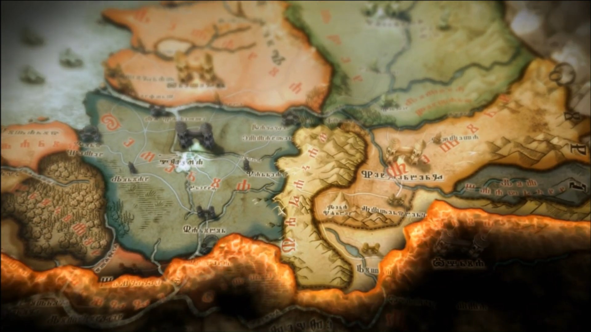
Las decisiones del jugador también afectan el estado político de distintos reinos. Dependiendo de las alianzas y acciones tomadas durante la historia, algunos gobernantes sobreviven, otros mueren y ciertas regiones quedan completamente desestabilizadas.
El juego muestra constantemente cómo pequeñas decisiones personales pueden alterar guerras enteras. Geralt, aunque intenta mantenerse neutral, termina influyendo directamente en el equilibrio político del continente.
El Norte queda debilitado después de los asesinatos y conflictos internos, algo que prepara el escenario para la invasión de Nilfgaard en The Witcher 3.
La recuperación de la memoria de Geralt
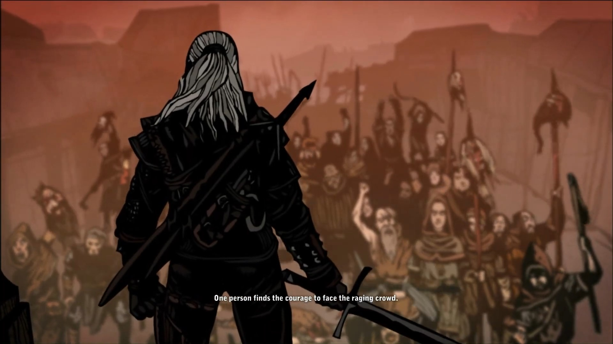
Otro aspecto fundamental del final es que Geralt recupera gran parte de sus recuerdos. Finalmente empieza a recordar con mayor claridad su relación con Yennefer, su pasado como brujo y los eventos anteriores a la trilogía de videojuegos.
Esto tiene un enorme impacto emocional porque Geralt ya no es solamente un hombre perdido intentando sobrevivir. Ahora comprende quién era realmente y qué personas marcaron su vida.
La recuperación de la memoria funciona como transición perfecta hacia The Witcher 3, donde la búsqueda de Yennefer y Ciri se convierte en el centro absoluto de la historia.
Conclusión de los finales
Los múltiples finales de The Witcher 2 demuestran que cada decisión dentro del universo de The Witcher tiene consecuencias reales. El juego evita las elecciones simples entre bien y mal, obligando al jugador a actuar dentro de un mundo lleno de corrupción, odio y conflictos políticos.
Las rutas de Roche e Iorveth muestran perspectivas completamente distintas sobre el continente, mientras que el destino de personajes como Letho cambia profundamente el tono del final.
Más que ofrecer un único cierre definitivo, el juego construye distintas versiones de un mundo que lentamente se dirige hacia una guerra aún mayor. Todo queda preparado para los eventos épicos de The Witcher 3: Wild Hunt.
Conclusión de The Witcher 2
The Witcher 2 transforma la saga en algo mucho más grande y político. Mientras el primer juego se enfocaba en conspiraciones locales y conflictos personales, esta secuela expande el universo hacia guerras entre reinos, conflictos raciales y manipulación política a gran escala.
Geralt deja de ser simplemente un brujo que caza monstruos y se convierte en una figura atrapada dentro de eventos históricos enormes. La historia demuestra que los monstruos más peligrosos muchas veces no son criaturas sobrenaturales, sino personas obsesionadas con el poder.
Además, el juego profundiza enormemente en la identidad de Geralt, sus recuerdos y sus conexiones con personajes fundamentales como Yennefer y Letho. Todo esto construye una base perfecta para el enorme conflicto que llegará en el tercer juego.
The Witcher 3: Wild Hunt – Historia Completa
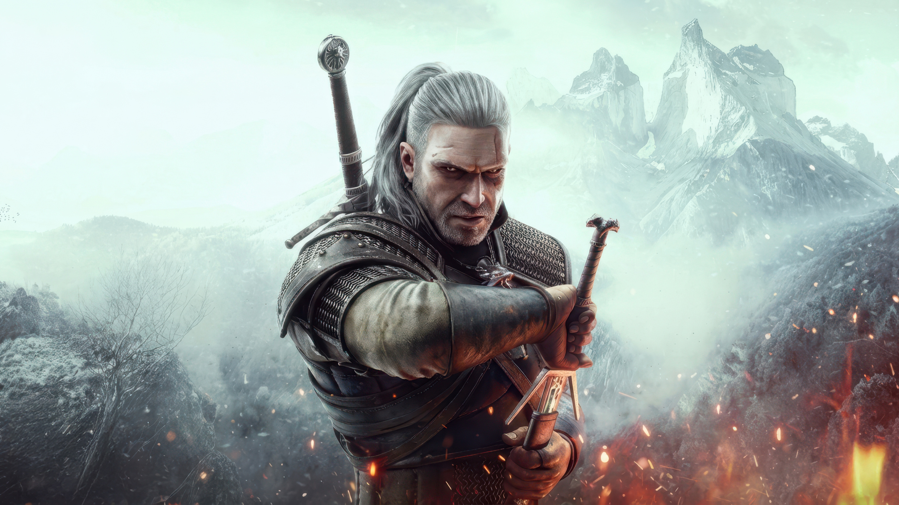
The Witcher 3: Wild Hunt representa el punto más importante y ambicioso de toda la saga. Después de los conflictos políticos y asesinatos de reyes ocurridos en el segundo juego, el continente se encuentra devastado por guerras, hambre y caos. El Imperio de Nilfgaard avanza cada vez más sobre los reinos del Norte, mientras aldeas enteras son destruidas y miles de personas intentan sobrevivir en medio del conflicto.
Sin embargo, la guerra no es la verdadera amenaza principal. Existe algo mucho más antiguo, sobrenatural y aterrador acercándose lentamente: la Cacería Salvaje. Un grupo espectral de guerreros capaces de viajar entre mundos, dejando muerte y destrucción a su paso.
Geralt de Rivia vuelve a convertirse en el centro de la historia, pero esta vez su viaje no gira solamente alrededor de conspiraciones políticas o monstruos. La historia tiene un enfoque mucho más personal y emocional: encontrar a Ciri, la hija adoptiva de Geralt, antes de que la Cacería Salvaje la capture.
Todo el juego gira alrededor de esa búsqueda desesperada.
El regreso de Yennefer

La historia comienza con Geralt siguiendo el rastro de Yennefer de Vengerberg, quien finalmente reaparece de manera importante después de haber sido mencionada durante toda la trilogía. Yennefer le informa que el emperador Emhyr var Emreis desea verlo urgentemente.
Cuando Geralt llega ante Emhyr, descubre la razón verdadera: Ciri ha regresado al continente y está siendo perseguida por la Cacería Salvaje.
Este momento cambia completamente el tono de la aventura. Geralt deja de actuar como un brujo errante y pasa a tener una misión personal enorme. Ciri no es simplemente alguien importante; es prácticamente familia para él.
Además, el juego profundiza muchísimo en la relación entre Geralt y Yennefer. Ambos personajes tienen una conexión compleja, marcada por amor, conflictos y años de separación. Su relación aporta gran parte de la carga emocional de la historia principal.
La búsqueda de Ciri
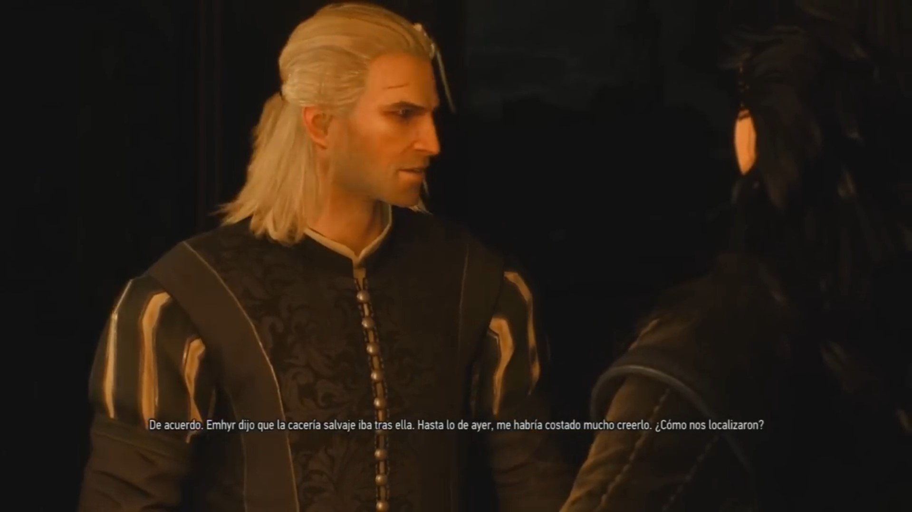
Gran parte del juego consiste en seguir las huellas de Ciri a través de distintas regiones del continente. Geralt viaja por Velen, Novigrado, Skellige y otros territorios intentando descubrir dónde estuvo ella y qué ocurrió durante su huida.
A medida que el jugador investiga, se revela que Ciri estuvo escapando constantemente de la Cacería Salvaje mientras ayudaba a distintas personas en el camino. Muchos personajes recuerdan haberla visto, pero casi siempre desaparece antes de que Geralt llegue.
La búsqueda funciona como una reconstrucción emocional del viaje de Ciri. Cada persona que habla de ella describe no solo su poder, sino también su personalidad, valentía y sufrimiento.
Esto convierte a Ciri en mucho más que un objetivo narrativo; se transforma en el verdadero corazón emocional de toda la historia.
La guerra y el continente destruido
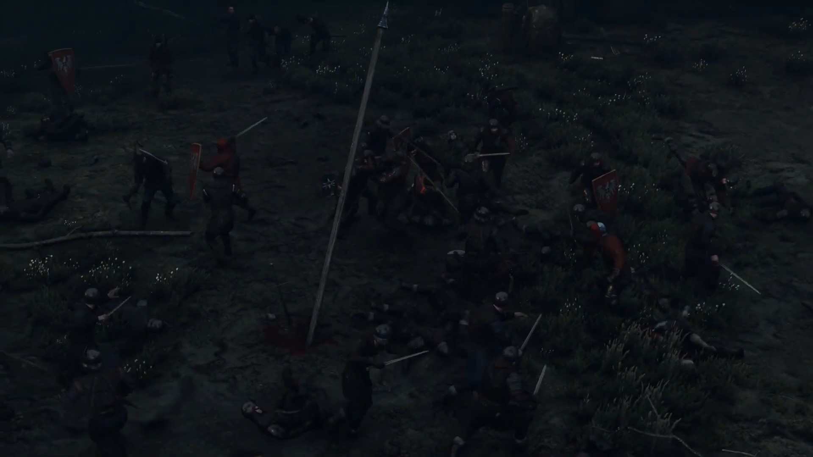
Mientras Geralt busca a Ciri, el continente sigue consumiéndose por la guerra entre Nilfgaard y los reinos del Norte. El juego muestra constantemente aldeas destruidas, soldados muertos, refugiados hambrientos y regiones enteras dominadas por el miedo.
La guerra funciona como fondo permanente de toda la aventura. Aunque Geralt intenta concentrarse en encontrar a Ciri, es imposible ignorar cómo el conflicto afecta a la población.
Novigrado, por ejemplo, representa uno de los lugares más importantes de esta etapa. La ciudad aparenta riqueza y estabilidad, pero detrás de eso existe corrupción, persecución religiosa y violencia extrema.
La Iglesia del Fuego Eterno persigue magos, alquimistas y cualquier persona considerada peligrosa. Esto crea uno de los ambientes más oscuros de toda la saga.
La Cacería Salvaje
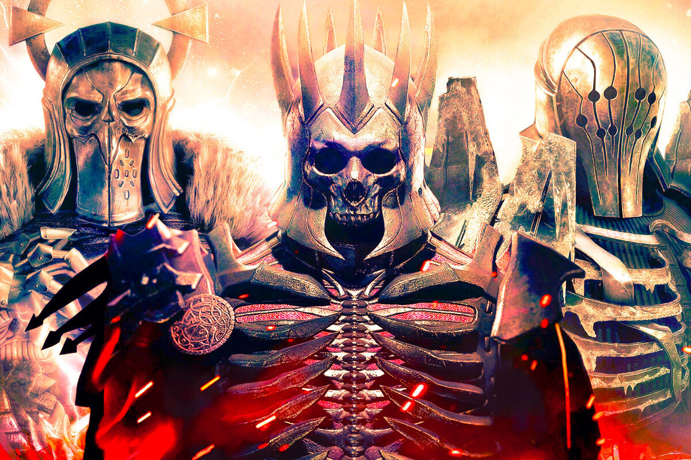
La Cacería Salvaje finalmente se revela como la principal amenaza del juego. Liderados por Eredin, estos guerreros espectrales viajan entre dimensiones buscando a Ciri debido a sus poderes especiales relacionados con la Sangre Antigua.
Ciri posee la capacidad de desplazarse entre mundos y dimensiones, algo extremadamente valioso para la Cacería. Eredin desea usar ese poder para expandir su dominio y salvar a su propio mundo del desastre conocido como la Escarcha Blanca.
A diferencia de otros enemigos de la saga, la Cacería Salvaje tiene una presencia casi apocalíptica. Cada vez que aparecen, traen frío extremo, muerte y destrucción.
El juego construye constantemente la sensación de que Geralt y sus aliados enfrentan algo mucho más grande que una guerra humana normal.
Kaer Morhen y la batalla más importante
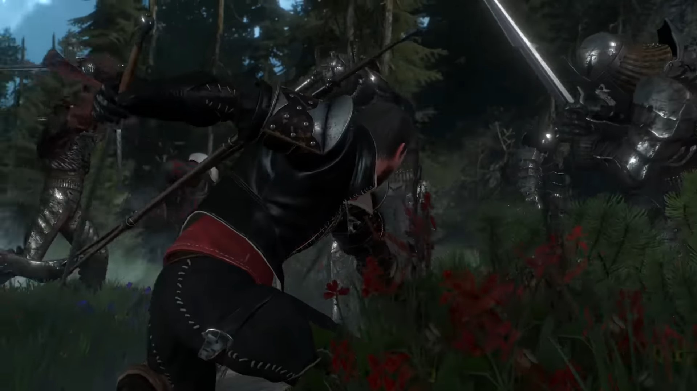
Uno de los momentos más importantes y emocionales de toda la saga ocurre cuando Geralt reúne aliados para defender Kaer Morhen del ataque de la Cacería Salvaje.
Viejos personajes regresan para ayudar: Yennefer, Triss, Vesemir, Lambert, Eskel y muchos otros. La fortaleza de los brujos vuelve a convertirse en el centro de la historia, igual que en el primer juego.
La batalla representa el punto máximo del conflicto. La Cacería Salvaje invade Kaer Morhen buscando capturar a Ciri, provocando una lucha enorme donde varios personajes arriesgan sus vidas.
Durante el enfrentamiento ocurre uno de los momentos más trágicos de toda la saga: la muerte de Vesemir.
Vesemir había sido mentor y figura paterna para Geralt y los demás brujos. Su muerte marca emocionalmente a todos los personajes y simboliza el fin definitivo de una era.
Ciri y el peso del destino
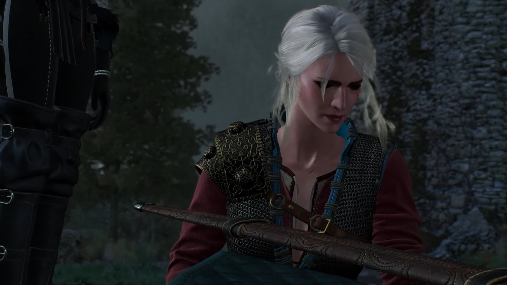
Después de la batalla en Kaer Morhen, la historia se centra todavía más en Ciri y en el enorme peso que carga sobre sus hombros.
Ciri no solo es perseguida por la Cacería Salvaje; también está conectada directamente con la profecía de la Escarcha Blanca, un desastre capaz de destruir mundos enteros.
A lo largo del juego se muestra cómo Ciri intenta escapar de la presión constante de convertirse en alguien destinado a salvar el mundo. A pesar de su enorme poder, sigue siendo una persona emocionalmente vulnerable.
Geralt actúa constantemente como figura protectora y paternal, intentando ayudarla no solo físicamente, sino también emocionalmente.
La batalla final contra Eredin
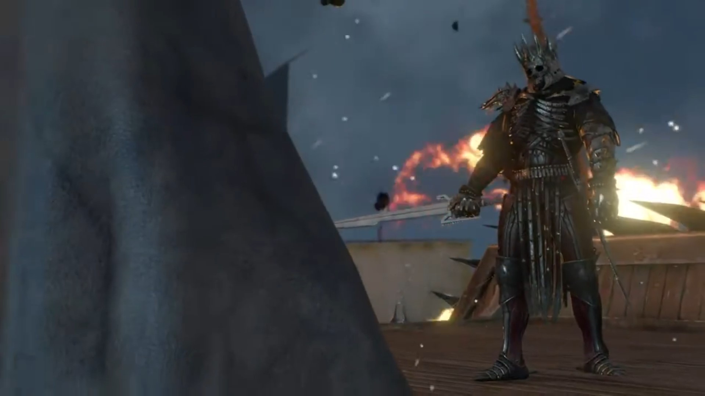
La confrontación final ocurre cuando Geralt y sus aliados enfrentan directamente a Eredin y a la Cacería Salvaje.
Después de múltiples enfrentamientos y persecuciones, Geralt finalmente logra combatir a Eredin en una batalla decisiva. El enfrentamiento simboliza mucho más que una pelea física: representa la resistencia del continente frente a una amenaza interdimensional.
Geralt consigue derrotar a Eredin, pero la verdadera amenaza todavía sigue presente: la Escarcha Blanca.
Es entonces cuando Ciri decide enfrentar su destino y entrar directamente en el fenómeno para intentar detenerlo.
Los múltiples finales de The Witcher 3
El destino final de Ciri depende completamente de las decisiones tomadas por el jugador durante toda la historia.
Existen varios finales principales:
- Ciri sobrevive y se convierte en bruja: considerado por muchos el mejor final. Ciri rechaza la vida política y decide seguir el camino de Geralt como cazadora de monstruos.
- Ciri se convierte en emperatriz: si ciertas decisiones políticas ocurren, Ciri acepta gobernar Nilfgaard, sacrificando parte de su libertad personal.
- Ciri muere: si Geralt falla emocionalmente en apoyarla durante momentos clave, Ciri pierde la confianza necesaria para enfrentar la Escarcha Blanca y desaparece.
Estos finales son extremadamente importantes porque no dependen únicamente de grandes elecciones políticas, sino también de cómo Geralt trata emocionalmente a Ciri durante toda la aventura.
El juego recompensa el apoyo, la confianza y el respeto hacia ella como persona.
Conclusión de The Witcher 3
The Witcher 3: Wild Hunt es el cierre definitivo de la historia de Geralt de Rivia. El juego mezcla guerra, política, monstruos, dimensiones paralelas y tragedia personal en una aventura gigantesca y profundamente emocional.
La relación entre Geralt y Ciri se convierte en el verdadero núcleo de toda la narrativa. Más allá de salvar el mundo, la historia trata sobre familia, identidad, destino y sacrificio.
La saga termina mostrando que incluso en un mundo lleno de violencia, guerras y monstruos, las conexiones humanas siguen siendo lo más importante.
Por eso The Witcher 3 es considerado uno de los mejores videojuegos de la historia: no solo por su tamaño o contenido, sino por la profundidad emocional y narrativa que logra construir.
The Witcher 3: DLCs y expansiones
Las expansiones de The Witcher 3: Wild Hunt amplían la saga con dos historias enormes y muy diferentes entre sí. Hearts of Stone se centra en una tragedia oscura, íntima y casi sobrenatural, mientras que Blood and Wine funciona como una despedida épica para Geralt, con una ambientación nueva, un tono más elegante y una historia que cierra de forma magistral su viaje.
Ambas expansiones están consideradas entre los mejores contenidos descargables jamás creados para un videojuego, no solo por su tamaño, sino por la calidad de sus personajes, misiones, atmósfera y narrativa.
Hearts of Stone – Historia completa
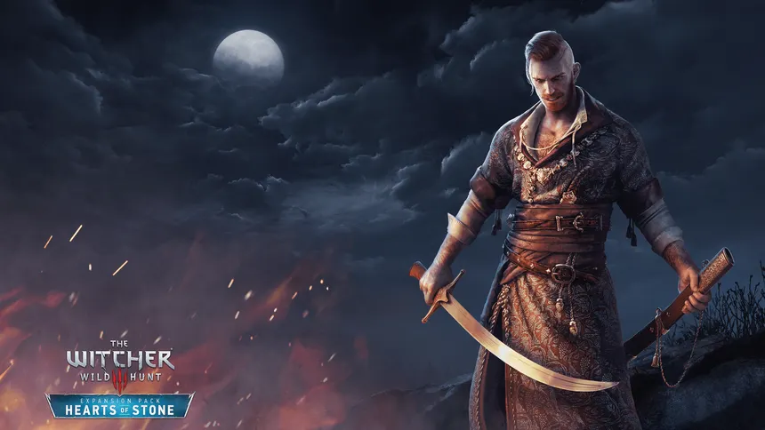
Hearts of Stone comienza con un tono más pequeño y personal que el juego base, pero rápidamente se transforma en una de las historias más oscuras de toda la saga. Geralt recibe un encargo aparentemente simple: eliminar a una criatura peligrosa que amenaza la zona de Oxenfurt. Sin embargo, como suele ocurrir en The Witcher, nada es realmente simple.
Durante esta aventura, Geralt conoce a Olgierd von Everec, un noble misterioso, cruel y al mismo tiempo trágico, que parece haber perdido toda sensibilidad humana. Su historia está ligada a un pacto sobrenatural con Gaunter O’Dimm, también conocido como el Hombre de Espejo, una entidad enigmática y aterradora que manipula a las personas con una calma inquietante.
La expansión profundiza en temas como los deseos, el costo de las decisiones y el vacío que dejan los errores del pasado. Olgierd no es solo un antagonista; también es una víctima de sus propias ambiciones y de un trato que lo condenó lentamente. Geralt termina atrapado en medio de esa maldición, intentando salvar vidas mientras descubre que el verdadero monstruo no siempre tiene forma física.
La figura de Gaunter O’Dimm es uno de los puntos más memorables de toda la historia. Su presencia genera tensión constante porque parece saberlo todo, moverse por encima de las reglas normales y manipular el destino como si fuera un juego. Su duelo final con Geralt es uno de los momentos más inquietantes y brillantes de la saga.
Hearts of Stone se siente más íntimo que la aventura principal, pero también más cruel en muchos sentidos. No se trata de salvar un reino entero, sino de enfrentar un pacto que destruyó vidas desde adentro.
Blood and Wine – Historia completa
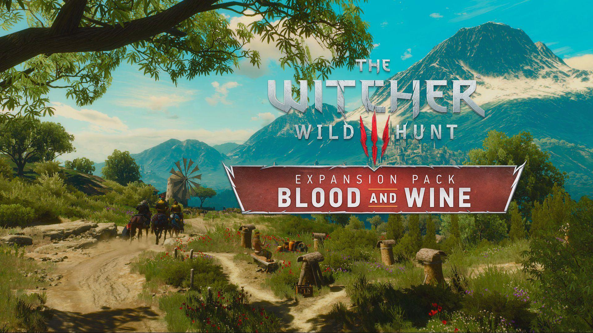
Blood and Wine es la expansión más grande y ambiciosa de The Witcher 3, y funciona como un cierre casi perfecto para la historia de Geralt. La aventura lleva al brujo a Toussaint, un ducado lejano, colorido y aparentemente pacífico, muy distinto al tono gris y devastado del resto del continente.
Toussaint parece sacado de un cuento de caballeros, con vino, castillos, torneos y paisajes brillantes. Pero como siempre en The Witcher, debajo de esa belleza se esconde algo oscuro. Geralt es llamado para investigar una serie de asesinatos brutales vinculados a un monstruo misterioso que está sembrando terror en la región.
La historia se va volviendo cada vez más compleja y termina revelando un conflicto entre viejos pactos, vampiros superiores, secretos ocultos y decisiones que pueden cambiar por completo el destino de la región. El personaje de Syanna agrega una capa emocional y trágica muy fuerte a la historia, ya que su relación con la duquesa Anna Henrietta y con el monstruo central del DLC está marcada por resentimiento, abandono y heridas del pasado.
A diferencia de la expansión anterior, Blood and Wine tiene un tono más luminoso, pero eso hace que sus momentos oscuros peguen todavía más fuerte. La historia combina misterio, drama, política y terror vampírico con una estructura mucho más épica y elegante.
Además, esta expansión funciona como una despedida para Geralt. Después de tantos años de monstruos, guerras y pérdidas, Toussaint le ofrece un cierre más tranquilo, aunque no necesariamente libre de dolor.
Los finales de Blood and Wine
Blood and Wine también tiene múltiples finales, dependiendo de las decisiones tomadas por el jugador durante la historia.
En uno de los finales, Geralt logra reconciliar a Syanna con Anna Henrietta, lo que permite que el conflicto se resuelva de manera más pacífica, aunque no siempre sin consecuencias dolorosas.
En otro, las decisiones llevan a una tragedia mayor, con muertes importantes y un cierre mucho más oscuro para la región.
También existe un final donde Geralt visita su propia casa en Toussaint, lo que funciona como una especie de recompensa simbólica tras toda una vida de violencia y soledad.
Estos finales hacen que la expansión no solo sea grande en contenido, sino también muy fuerte en términos emocionales.
Conclusión de los DLCs de The Witcher 3
Los DLCs de The Witcher 3 elevan la saga a un nivel todavía más alto. Hearts of Stone ofrece una historia más oscura, íntima y psicológica, mientras que Blood and Wine entrega una despedida enorme, hermosa y emocional para Geralt de Rivia.
Ambas expansiones demuestran por qué The Witcher 3 sigue siendo considerado uno de los mejores RPG de la historia. No solo amplían el mundo, sino que también enriquecen a sus personajes y dejan historias que podrían sostenerse por sí solas como obras completas.
Con estos DLCs, la saga de Geralt no solo se expande: se cierra con una madurez narrativa impresionante.
Todos los personajes importantes de The Witcher
La saga The Witcher se destaca por tener algunos de los personajes más complejos y mejor escritos de los videojuegos. Cada figura importante tiene motivaciones propias, un pasado profundo y una evolución constante a lo largo de la historia.
A diferencia de otros universos de fantasía, los personajes de The Witcher rara vez son completamente heroicos o completamente malvados. La mayoría vive atrapada entre decisiones difíciles, guerras, traiciones y conflictos personales.
La narrativa funciona precisamente gracias a esas relaciones humanas, emocionales y políticas que rodean constantemente a Geralt de Rivia.
Geralt de Rivia
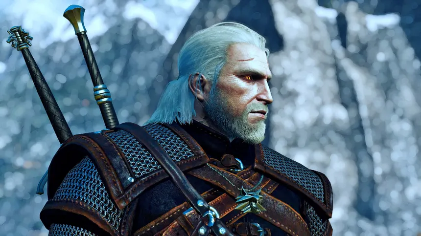
Geralt de Rivia es el protagonista central de toda la saga. Fue entrenado desde niño en Kaer Morhen y sometido a mutaciones brutales para convertirse en brujo, un cazador profesional de monstruos.
Las mutaciones le otorgaron reflejos sobrehumanos, resistencia extrema y habilidades especiales, pero también provocaron que muchas personas lo vieran como alguien inhumano.
Aunque Geralt suele intentar mantenerse neutral frente a los conflictos políticos, constantemente termina involucrado en guerras, conspiraciones y tragedias personales.
Lo que hace especial al personaje es su humanidad. A pesar de todo el dolor, las pérdidas y la violencia, Geralt sigue intentando proteger a quienes ama y mantener un código moral propio.
Su relación con Ciri y Yennefer representa el núcleo emocional de toda la saga.
Ciri
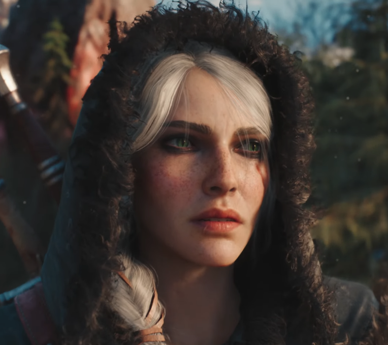
Cirilla Fiona Elen Riannon, conocida como Ciri, es una de las figuras más importantes del universo The Witcher. Posee la Sangre Antigua, un poder extremadamente raro ligado a dimensiones y profecías.
Desde pequeña fue perseguida por distintos grupos que querían usar sus habilidades. Geralt termina convirtiéndose en figura paterna para ella, entrenándola y protegiéndola en Kaer Morhen.
Ciri combina habilidades de combate increíbles con poderes sobrenaturales únicos. Puede desplazarse entre mundos y dimensiones, algo que la convierte en objetivo principal de la Cacería Salvaje.
Sin embargo, detrás de todo ese poder existe una persona marcada por el miedo, el trauma y la presión de cargar con un destino gigantesco.
La relación entre Geralt y Ciri es uno de los aspectos emocionales más fuertes de toda la saga.
Yennefer de Vengerberg
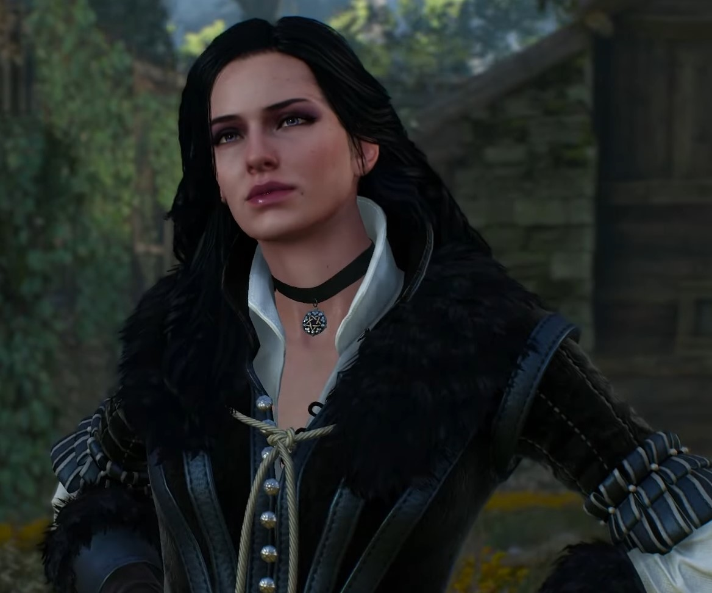
Yennefer es una de las hechiceras más poderosas del continente y el gran amor de Geralt.
Antes de convertirse en maga, sufrió una vida extremadamente dura debido a deformidades físicas y rechazo social. Gracias a la magia transformó completamente su apariencia, aunque el proceso le dejó secuelas emocionales profundas.
Yennefer es inteligente, fría y muchas veces manipuladora, pero también profundamente leal a quienes realmente ama.
Su relación con Geralt está llena de conflictos, separaciones y reconciliaciones constantes, pero ambos permanecen unidos emocionalmente incluso en los peores momentos.
También desarrolla un vínculo maternal muy fuerte con Ciri, convirtiéndose en parte esencial de la familia improvisada que forman los tres personajes.
Triss Merigold
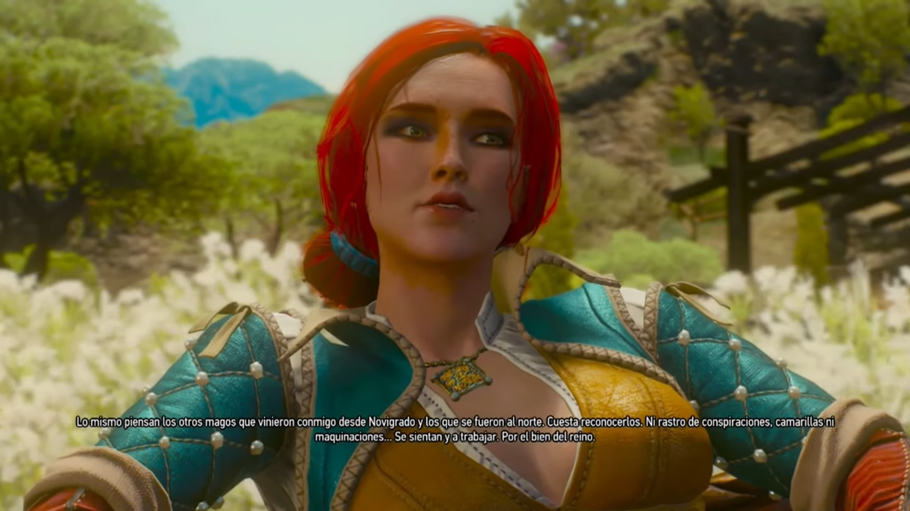
Triss Merigold es otra de las hechiceras más importantes de la saga y una de las aliadas más cercanas de Geralt.
A diferencia de Yennefer, Triss suele mostrar una personalidad más cálida y compasiva. Sin embargo, también tiene conflictos internos importantes y una gran carga emocional relacionada con su relación con Geralt.
Durante la pérdida de memoria de Geralt en los primeros juegos, Triss ocupó un lugar muy importante en su vida.
En The Witcher 3, ayuda a magos perseguidos en Novigrado, enfrentándose directamente a la persecución religiosa y política del continente.
El personaje representa muchas veces el lado más humano y vulnerable del mundo mágico.
Vesemir
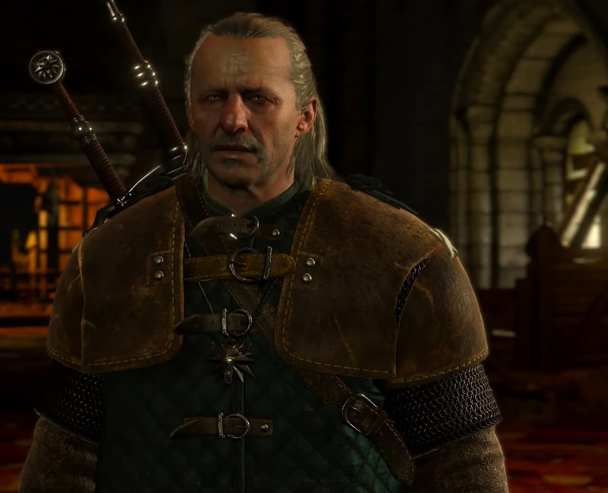
Vesemir es el brujo más antiguo de Kaer Morhen y mentor de Geralt.
Representa a la vieja generación de brujos, una época donde existían más escuelas y los cazadores de monstruos tenían mayor presencia en el continente.
Sabio, paciente y experimentado, Vesemir funciona como figura paterna para los demás brujos.
Su muerte en The Witcher 3 simboliza el final definitivo de la antigua era de los brujos.
Letho de Gulet
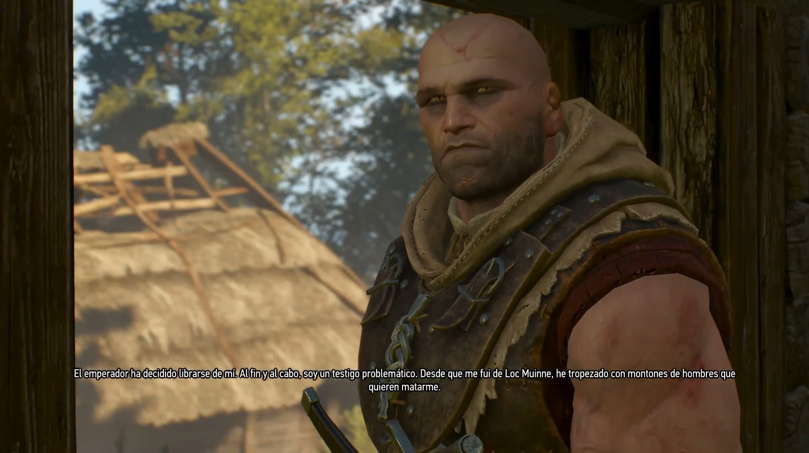
Letho es un brujo de la Escuela de la Víbora y principal antagonista de The Witcher 2.
A diferencia de Geralt, decidió trabajar directamente para intereses políticos con el objetivo de garantizar la supervivencia de su escuela.
Aunque es responsable de múltiples asesinatos de reyes, el juego muestra constantemente que no es simplemente un monstruo. Letho es pragmático, inteligente y consciente de que el mundo ya casi no necesita brujos.
Su relación con Geralt funciona como espejo oscuro del protagonista: ambos son similares, pero eligieron caminos diferentes.
Eredin
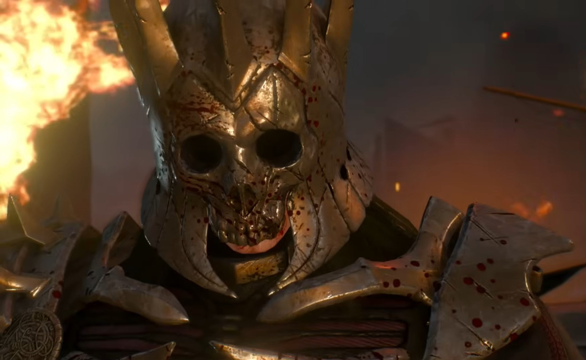
Eredin es el líder de la Cacería Salvaje y principal antagonista de The Witcher 3.
Proviene de otra dimensión y busca usar el poder de Ciri para salvar su mundo del desastre conocido como la Escarcha Blanca.
Aunque sus objetivos tienen una lógica propia, sus métodos son brutales y despiadados.
La presencia de Eredin representa una amenaza casi apocalíptica para todos los mundos conectados por las dimensiones.
Emhyr var Emreis
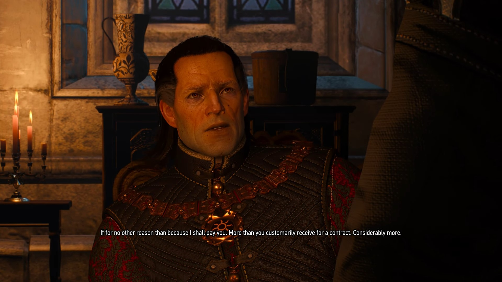
Emhyr es el emperador de Nilfgaard y uno de los hombres más poderosos del continente.
Frío, calculador y extremadamente inteligente, lidera la expansión militar del imperio sobre el Norte.
Aunque muchas veces parece actuar únicamente por ambición política, también tiene conexiones personales profundas con Ciri.
Representa perfectamente el tono político de la saga: poder, control y sacrificios constantes.
Gaunter O’Dimm
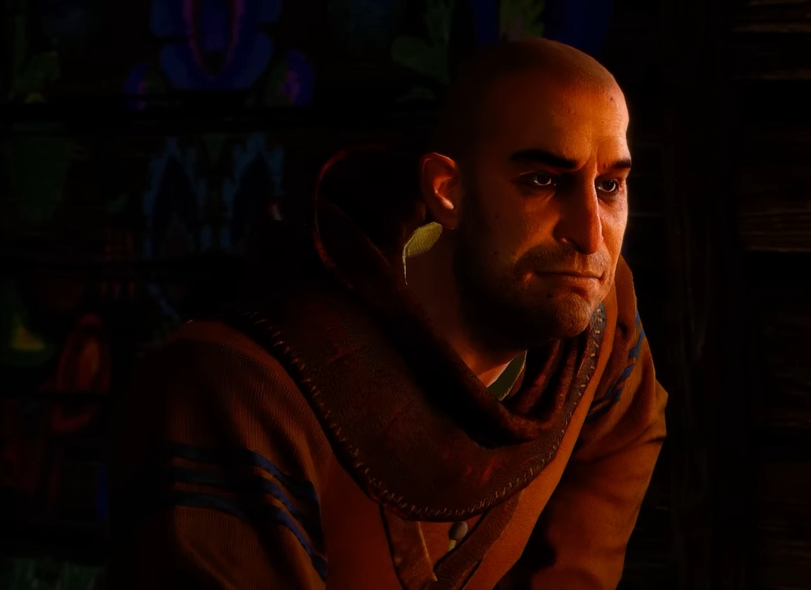
Gaunter O’Dimm, también conocido como el Hombre de Espejo, es uno de los personajes más misteriosos y aterradores de toda la saga.
Aparentemente tranquilo y educado, manipula vidas mediante pactos y deseos.
Nunca se explica completamente qué es realmente, pero queda claro que posee poderes sobrenaturales enormes y una comprensión casi absoluta de las debilidades humanas.
Su historia en Hearts of Stone transforma la expansión en un relato oscuro sobre consecuencias, ambición y desesperación.
Olgierd von Everec
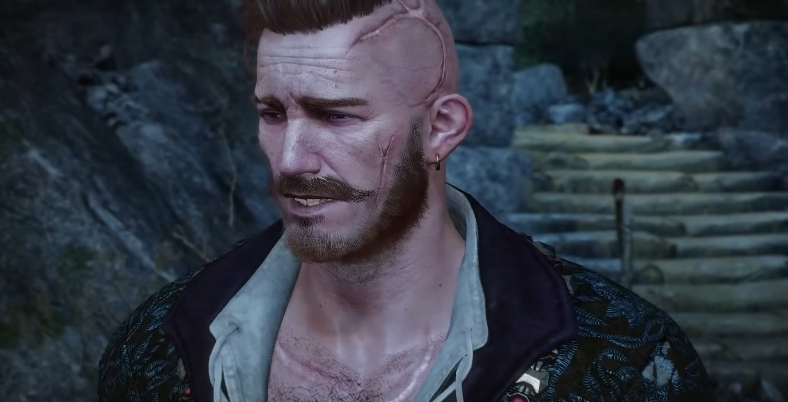
Olgierd es uno de los personajes más trágicos de Hearts of Stone.
Originalmente era un noble apasionado y ambicioso, pero terminó haciendo un pacto con Gaunter O’Dimm que lentamente destruyó su humanidad.
La maldición provocó que perdiera gran parte de su capacidad de sentir emociones reales.
Aunque muchas veces actúa con crueldad, el juego deja claro que también es víctima de sus propias decisiones y de un destino que ya no puede controlar.
Dettlaff van der Eretein
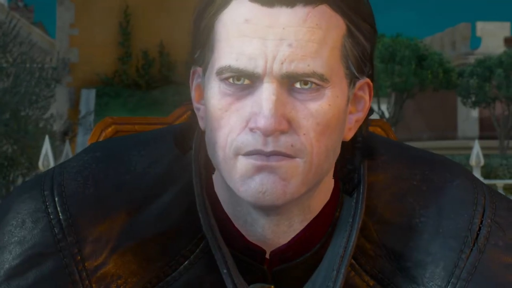
Dettlaff es uno de los vampiros superiores más importantes de Blood and Wine.
A diferencia de monstruos tradicionales, posee inteligencia, emociones y una personalidad extremadamente compleja.
Su historia gira alrededor del amor, la manipulación y la traición.
El DLC muestra constantemente que Dettlaff no es simplemente una criatura malvada, sino alguien emocionalmente destruido por los eventos que lo rodean.
Eso hace que el conflicto final sea mucho más trágico y difícil moralmente.
Anna Henrietta
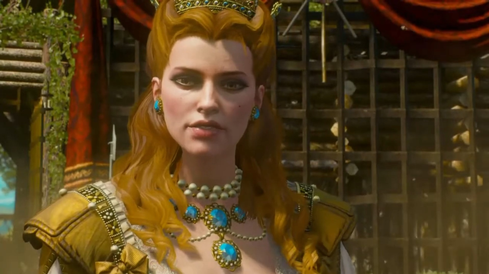
Anna Henrietta es la duquesa de Toussaint y una de las figuras políticas centrales de Blood and Wine.
Representa la elegancia, el orgullo y la aparente perfección de Toussaint, aunque debajo de esa imagen también existen conflictos familiares y errores del pasado.
Su relación con Syanna es fundamental para entender la tragedia principal del DLC.
Syanna

Syanna es uno de los personajes más trágicos de Blood and Wine.
Desde pequeña fue rechazada y aislada debido a supersticiones relacionadas con una supuesta maldición.
Ese abandono marcó completamente su personalidad y terminó alimentando un profundo resentimiento hacia quienes la lastimaron.
Aunque sus acciones son extremas y violentas, el juego deja claro que detrás de ellas existe dolor acumulado durante años.
Su historia representa perfectamente la filosofía moral de The Witcher: incluso las personas más peligrosas pueden haber sido destruidas antes por el mundo.
Conclusión de los personajes de The Witcher
Los personajes de The Witcher son el corazón absoluto de toda la saga.
Más allá de monstruos, guerras y magia, las historias funcionan gracias a relaciones humanas complejas, emociones reales y conflictos morales constantes.
Cada personaje importante deja una marca en el mundo y en Geralt, construyendo una narrativa profundamente madura y emocional.
Por eso The Witcher sigue siendo considerada una de las mejores sagas narrativas de la historia de los videojuegos.